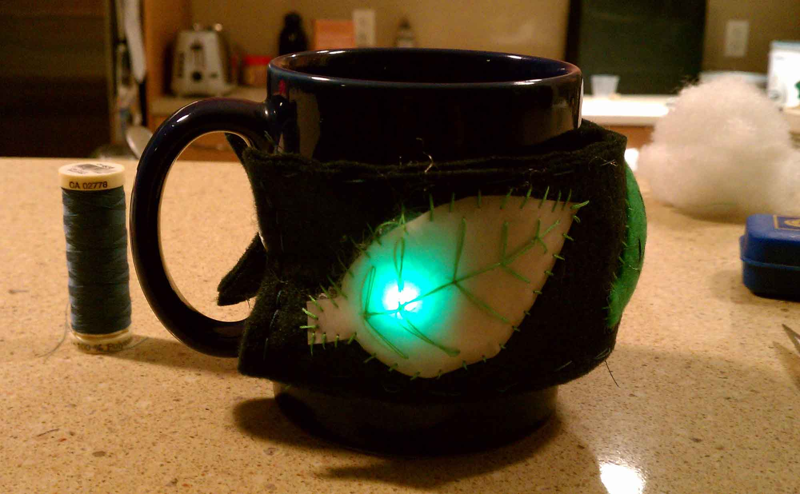

Get Cozy!
Get Cozy is a prototype of a simple beverage reminder system, made as a class project for Info 262, Theory and Practice of Tangible User Interfaces. From personal experience, hot tea is often forgotten on the counter until cold or oversteeped. We applied a user centered design process to solve this problem, and created a solution to subtlety remind the user of their waiting tea without interrupting the calming ritual of drinking tea. Inspired by mugs with removable handles and DIY wearables, we prototyped a removable mug cozy that doubles as a bracelet. Individuals can easily slip on this cozy and simply go to another room. As the tea cools, the mug wirelessly communicates with the cozy, which slowly changes color to reflect the tea’s current temperature. This subtle notification acts as a reminder that there is tea in the other room which is slowly cooling without being obtrusive or distracting.